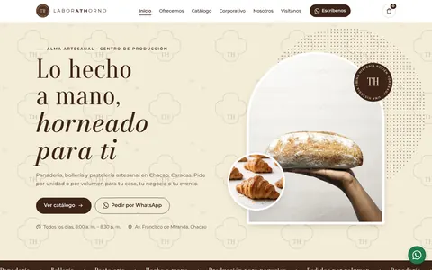
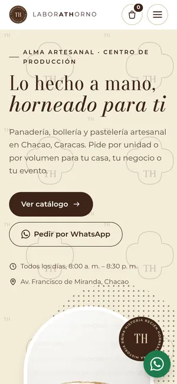

01Catálogo digital + pedidos por WhatsApp
Laborathorno
Cliente real · Caracas
Panadería y centro de producción. Catálogo de 38 productos en 7 categorías, carrito con mínimos por producto, fecha y franja de retiro calculadas según el tiempo de elaboración y pedido directo al WhatsApp del negocio.
Ver el sitio en vivo de Laborathorno (pestaña nueva)